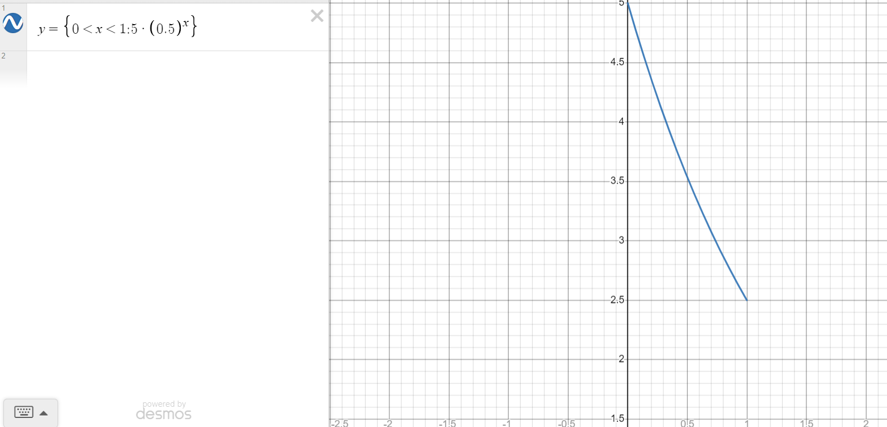

Here is a video of my simple circuit. This is composed of two blue led's and a photoresistor. One LED's goal is to light the dark, and it lights up proportionally to the amount of darkness present. The other LED fears the dark, and hides proportionally to how dark it is. There is a short calibration period at the start, where you see me set an example minimum and maximum.

Above is a static image of my circuit. I have a separate section for each light that I run, and another separate section for the photoresistor. Each LED section draws power from a separate port, then also includes a LED and a resistor. The button section uses a 10k resistor instead of a 100 Ohm one, and draws directly from the 5V power port rather than one of the others. It also has a wire that connects it to the input port in order to perform the analogRead operation. Cable management is as follows: Blue Wire = LED power output, Red Wire = Photoresistor Circuit's Power Output, Black Wire = Photoresistor voltage divider input, White Wire = Ground.
Above is the schematic image of my circuit. I have chosen to depict each LED's schematic, although they are all the same setup. Each pin is supplying 5 volts, and each LED creates a 3.3V voltage drop. I chose to use 100 ohm resistors since they were the closest to my target resistance (85 ohms). Further, it seems reasonable to adjust towards greater resistance in this situation since picking the closest lower ohm resistor would cause the LED to burn out faster.
For this project, I have additionally added an image of my input circuit, which draws directly from power and then has a photoresistor, a wire to an input pin, and a 10k Ohm resistor into the grounding line.
The calculations I made for the ideal resistance were as follows:
The rationale behind the 10k Ohm Resistor in the input circuit is primarily based on the advice we were given in class, but I wanted to set the cap on the current in the system for the case when there is no resistance on the potentiometer. In this case, we would have 5V/10,000 = 0.5 miliamps of current- a safe amount.
I wasn't sure if we needed to explain LED's, but the circuit has not changed since previous projects: I know the port's output is 5V, and that a blue LED has a voltage drop of 3.3V, meaning that the system has 1.7V unresisted with just wires. In order to hit a target current of 0.02A, I can solve the equation 1.7V=0.02A*R for R to get R=1.7/0.02 (or R = 85), where R is my target resistance. However, since I do not have an 85 Ohm resistor, I used a 100 Ohm one, resulting in me solving 1.7V=A*100R, getting A = 1.7/100, or 0.017A as my actual current.
Voltage we might read would range from 5v to 2.5v. 5V correlates to a no resistance potentiometer and 2.5 correlates to its expected cap at 10k ohms, with a statik 10k ohm resistor in the circuit. These values are found through Ohms law
int inputPin = A4; // Pin that collects input
int fearTheDarkPin = 11; // pin for led that will brighten inversely to darkness
int lightTheDarkPin = 10; // pin for led that will brighten with darkness
int upperBound = 0; // upper bound initiates to min val so we can calibrate it upwards
int lowerBound = 1023; // lower bound initiates to max val so we can calibrate downwards
// the functional upperbound is what we will constrain the input to on the top end.
// It serves the same purpose as the more standard lower bound but is needed since I have
// a light dim with ambient brightness, and I want it to go all the way out.
int funcUpperBound = 0;
// The functional lowerbound is what we constrain the input to on the bottom end. This will
// help make the dark fearing light go all the way off when the photoresistor is covered.
int funcLowerBound = 1023;
void setup() {
int calibInput; // Initializes input var for calibration data
// Citation: I have looked at the arduino calibration example, although I believe my code is different and my own
while(millis() < 10000) { // I callibrate for 10 seconds
int calibInput = analogRead(inputPin); // read input through the input pin
// if the input is less than lowerBound, it becomes the new lower bound
lowerBound = min(lowerBound, calibInput);
// if the input is higher than the upperBound, it becomes the new upper bound
upperBound = max(upperBound, calibInput);
}
// this if condition checks if the lower bound is zero
if (lowerBound == 0) {
funcLowerBound = 50; // if the lower bound is zero we will manually set the lower constraint to 50 - this is set based on my ambient brightness
// I do this to avoid multiplying by zero, and to give me some cushion so I can more reliably turn lights all the way off/on, or in case i got an outlier 0 input reading
} else { // if the lower bound is not zero
funcLowerBound = lowerBound * 1.10; // the lower constraint is set to 110% of it's measured value to give me a bit of cushion in reaching it
}
// I don't check if the upper bound is zero since any brightness at all will raise it
// Similar to the lower constraint, the upper constraint on brightness is set to 90% of its measured value to give me some cushion
funcUpperBound = upperBound * 0.9;
}
void loop() {
// Citation: I have seen the arduino in-out example, but I believe my code is different and my own
// Read in input
int input = analogRead(inputPin);
// Constrains input to bounds determined during calibration
input = constrain(input, funcLowerBound, funcUpperBound);
// I map the value to output to a duty cycle (representing 0 to 5 volts) with 0V mapped to the lower bound
// and 5V mapped to the upper bound
int toOutput = map(input, funcLowerBound, funcUpperBound, 0, 255);
// Writes the mapped value to the pin that is bright correlating to light brightness
analogWrite(fearTheDarkPin, toOutput);
// Writes the mapped value to the pin that is darker when it is bright out
analogWrite(lightTheDarkPin, (255 - toOutput));
// delay 20 ms
delay(20);
}
The resistor needs to be R1 under our current schematic but this is definitely something we could work around. With the way we've set up map, we map with high voltage (low resistance) correlating to writing high voltage, so a direct 1:1 swap of resistor placement with no other changes would not maintain the same behaviour. However, we could solve this by subtracting our read value from the maximum (1023) if r2 was variable and r1 was static (this is based on a system like my own).
For example, in my current schematic if the static resistor was first (still 10k ohms) and the potentiometer had a resistance of 2.5k ohms, we would have a measured voltage of (2.5kOhms/(10k ohms + 2.5k ohms))*5V resulting in a Voltage measured of 1 V. In my code this would track as the sensor was reading darkness but I could get around it by subtracting the voltage reading from 5 to get 4 V as before (or from 1023 as raw analog read input and then converting that to V).
Example Calculation: R1 Variable and 1k ohms R2 Static and 4k ohms. Total system resistance = 5 k ohms, so each 1k ohms of resistance corresponds to a volt across a specific resistor. With Variable as R1 we will have (4kOhms/5kOhms)5V or 4 V read. If we reverse this we would get (1kOhms/5kOhms)5V and read 1 V. This is not the same and does not work in a vacuum, but if we read with a code system that is built around R1 being static, we would do 5V-(R2/(R1+R2))5V and get 4V as before.
From left to right, I am displaying the voltage when the resistor is 1: covered, 2: average lighting, 3: maximally lit
Values were calculated by printing the read input voltage to the monitor, then dividing by 1023 to get their percentage of 5V, then multiplying by 5 to get their voltage. As I didn't gradually lighten or darken too largely in my demo, and I have a reasonably large read time, I have chosen to omit changes between states, but it would effectively curve upwards as the light is uncovered.
This seems to align with what the datasheet implies, given it isn't perfectly linear and does not guarantee zero resistance at maximal brightness.
Although the above answer is mathematically correct, it doesn't account for issues like sensor issues, variance, and the like. Below is a model more representative of expected behaviour as the resistor is gradually exposed to less light, starting at maximal brightness and ending at minimum brightness. (This is in an ideal system, where the brightness values map perfectly to the calibrated bounds and the resistor scales from 0 to 10)
This example accounts for the logarithmic nature and shows the rough mathematical values the voltage would take, with 5V being measured when there was no resistance and 2.5V being measured in complete darkness and maximum resistance. The time is relative only but could be mapped to a 1s shift from max bright to max dark.
This would allow us to store larger integers and have more specificity in both reads and writes. the 10 bit integer can store numbers from 0 to 1023 (representing 1111111111) and the 16 bit integer can store from 0 to 65535 (1111111111111111). These can be calculated by the formula: Answer = 2^(bit count) - 1
I used calibration for my answer so my map function's next two values (the read ones) after the input to map param would be formatted the same, but when they were calibrated I would have set the upper bound to 0 and the lower bound to 65535 (representing the same as putting 0, 65535 into the 2nd and 3rd params). The 4th and 5th params (the write ones) would get a min of 0 and a max of 1023, since by adding two bits we basically (not exactly but very close) double the precision available to us twice by about quadrupling our range we can map to.
My new map code would be: map(input, funcLowerBound, funcUpperBound, 0, 1023), or map(input, 0, 65535, 0, 1023) as the actual inputs if we assume perfect maximum and minimum calibration with no built in cushion (I give the latter example since it seems like the spirit of what the question is asking although not exactly how my code would interact with it).